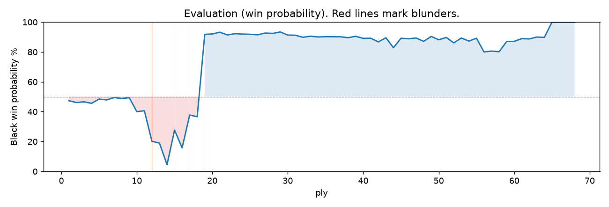

Date: 2026.07.14 | Time control: rapid (1800) | You played: black Game: https://www.chess.com/game/live/171577007110
METRICS:
Best: The played move exactly matches Stockfish's top move
Excellent: A non-best move that loses 2 WP points or less.
Good: WP loss is over 2, but under 5 points; also used for losses under 20 when the position remains already decided.
Inaccuracy: WP loss is at least 5 but under 10 points.
Mistake: WP loss is at least 10 but under 20 points; also generally used when a forced mate is missed with under 10 points of WP loss.
Blunder: WP loss is 20 points or more, or a forced mate is missed with at least 10 points of WP loss.
See: https://support.chess.com/en/articles/8572705-how-are-moves-classified-what-is-a-blunder-or-brilliant-etc
(Brillint, Great and Miss are rating subjective)

You played 6...O-O. Stockfish preferred Nh6, after which the main line runs 6...Nh6 7. Nf3 Ng4 8. Bxf7+ Kxf7 9. Ng5+. The evaluation crossed from equal to losing, which matters more than the raw number. Why it went wrong: left knight on g4 insufficiently defended. Before committing to a quiet move here, the checklist is checks, captures, threats, in that order. The engine first prefers this move at depth 9; findable, but it takes a deliberate look rather than a scan. Candidates considered by the engine: Nh6 (+1.03), d5 (+1.49), Nxf2 (+2.15).
You played 5...Ng4. Stockfish preferred h6, after which the main line runs 5...h6 6. Nc3 O-O 7. h3 Bb6. This was a judgment error rather than a missed tactic; compare the pawn structure and piece activity after both moves. The engine does not prefer this move until depth 11; missing it is forgivable, so weigh this one lightly. Candidates considered by the engine: h6 (+0.07), d6 (+0.09), Bb6 (+0.14).
You played 6...O-O. Stockfish preferred Nh6, after which the main line runs 6...Nh6 7. Nf3 Ng4 8. Bxf7+ Kxf7 9. Ng5+. The evaluation crossed from equal to losing, which matters more than the raw number. Why it went wrong: left knight on g4 insufficiently defended. Before committing to a quiet move here, the checklist is checks, captures, threats, in that order. The engine first prefers this move at depth 9; findable, but it takes a deliberate look rather than a scan. Candidates considered by the engine: Nh6 (+1.03), d5 (+1.49), Nxf2 (+2.15).
You played 7...Nb4. Stockfish preferred d5, after which the main line runs 7...d5 8. Qh5 h6 9. exd5 Nd4 10. Ne4. Why it went wrong: motif: fork; creates threat on g4, c4. This was a judgment error rather than a missed tactic; compare the pawn structure and piece activity after both moves. The engine prefers this move from search depth 1; it sits near the surface, a quiet move, but one whose point shows at a glance. Candidates considered by the engine: d5 (+3.95), h6 (+3.98), Qe7 (+5.23).
You played 8...h6. Stockfish preferred d5, after which the main line runs 8...d5 9. Qh5 h6 10. exd5 hxg5 11. Bxg5. Why it went wrong: motif: fork; creates threat on g4, c4. This was a judgment error rather than a missed tactic; compare the pawn structure and piece activity after both moves. The engine prefers this move from search depth 1; it sits near the surface, a quiet move, but one whose point shows at a glance. Candidates considered by the engine: d5 (+2.61), h6 (+4.31), Qe7 (+5.76).
You played 22...Qh3. Stockfish preferred fxe4, after which the main line runs 22...fxe4 23. Bxe4 Rxe4 24. Rxe4 Qxe4+ 25. Rg2. Why it went wrong: a favorable capture was available (Qxf2). This was a judgment error rather than a missed tactic; compare the pawn structure and piece activity after both moves. The engine first prefers this move at depth 9; findable, but it takes a deliberate look rather than a scan. Candidates considered by the engine: fxe4 (-5.83), Re7 (-5.28), Kf7 (-5.04).
You played 28...Rf8. Stockfish preferred Qh5, after which the main line runs 28...Qh5 29. Bb3 d5 30. Reg3 Kh8 31. Rxg7. Why it went wrong: motif: creates threat on h4. This was a judgment error rather than a missed tactic; compare the pawn structure and piece activity after both moves. The engine first prefers this move at depth 10; findable, but it takes a deliberate look rather than a scan. Candidates considered by the engine: Qh5 (-5.74), Qf5 (-5.37), Qd2 (-5.28).
| Ply | Move | Eval before | Eval after | Best | CP loss | WP loss | Class |
|---|---|---|---|---|---|---|---|
| 1 | 1.e4 | +0.66 | +0.29 | e4 | 37 | 3% | best |
| 2 | 1...e5* | +0.29 | +0.42 | c5 | 13 | 1% | excellent |
| 3 | 2.Nf3 | +0.42 | +0.37 | Nf3 | 5 | 0% | best |
| 4 | 2...Nc6* | +0.37 | +0.48 | Nf6 | 11 | 1% | excellent |
| 5 | 3.Bc4 | +0.48 | +0.17 | Bc4 | 31 | 3% | best |
| 6 | 3...Bc5* | +0.17 | +0.23 | Nf6 | 6 | 1% | excellent |
| 7 | 4.O-O | +0.23 | +0.06 | c3 | 17 | 2% | excellent |
| 8 | 4...Nf6* | +0.06 | +0.13 | Nf6 | 7 | 1% | best |
| 9 | 5.d3 | +0.13 | +0.07 | Re1 | 6 | 1% | excellent |
| 10 | 5...Ng4* | +0.07 | +1.10 | h6 | 103 | 9% | inaccuracy |
| 11 | 6.Ng5 | +1.10 | +1.03 | Bxf7+ | 7 | 1% | excellent |
| 12 | 6...O-O* | +1.03 | +3.74 | Nh6 | 271 | 20% | blunder |
| 13 | 7.Qxg4 | +3.74 | +3.95 | Qxg4 | 0 | 0% | best |
| 14 | 7...Nb4* | +3.95 | +8.32 | d5 | 437 | 14% | mistake |
| 15 | 8.Na3 | +8.32 | +2.61 | Qf5 | 571 | 23% | blunder |
| 16 | 8...h6* | +2.61 | +4.55 | d5 | 194 | 12% | mistake |
| 17 | 9.Nh3 | +4.55 | +1.36 | Bxf7+ | 319 | 22% | blunder |
| 18 | 9...d5* | +1.36 | +1.49 | d5 | 13 | 1% | best |
| 19 | 10.Bxh6 | +1.49 | -6.56 | Qg3 | 805 | 55% | blunder |
| 20 | 10...Bxg4* | -6.56 | -6.66 | Bxg4 | 0 | 0% | best |
| 21 | 11.Bg5 | -6.66 | -7.13 | Be3 | 47 | 1% | excellent |
| 22 | 11...Qd7* | -7.13 | -6.42 | Qd7 | 71 | 2% | best |
| 23 | 12.exd5 | -6.42 | -6.73 | Be3 | 31 | 1% | excellent |
| 24 | 12...Bxh3* | -6.73 | -6.63 | Nxd5 | 10 | 0% | excellent |
| 25 | 13.gxh3 | -6.63 | -6.58 | gxh3 | 0 | 0% | best |
| 26 | 13...Qxh3* | -6.58 | -6.45 | c6 | 13 | 0% | excellent |
| 27 | 14.c3 | -6.45 | -6.89 | Be3 | 44 | 1% | excellent |
| 28 | 14...Qg4+* | -6.89 | -6.80 | Nxd3 | 9 | 0% | excellent |
| 29 | 15.Kh1 | -6.80 | -7.20 | Kh1 | 40 | 1% | best |
| 30 | 15...Qxg5* | -7.20 | -6.39 | Nxd3 | 81 | 2% | good |
| 31 | 16.cxb4 | -6.39 | -6.36 | cxb4 | 0 | 0% | best |
| 32 | 16...Bd6* | -6.36 | -5.92 | Bxb4 | 44 | 1% | excellent |
| 33 | 17.Nb5 | -5.92 | -6.15 | Rg1 | 23 | 1% | excellent |
| 34 | 17...e4* | -6.15 | -5.98 | Qh5 | 17 | 1% | excellent |
| 35 | 18.Rg1 | -5.98 | -6.04 | Nxd6 | 6 | 0% | excellent |
| 36 | 18...Qh4* | -6.04 | -6.03 | Qh5 | 1 | 0% | excellent |
| 37 | 19.Nxd6 | -6.03 | -6.02 | Nxd6 | 0 | 0% | best |
| 38 | 19...cxd6* | -6.02 | -5.84 | cxd6 | 18 | 1% | best |
| 39 | 20.dxe4 | -5.84 | -6.12 | Rg3 | 28 | 1% | excellent |
| 40 | 20...Rfe8* | -6.12 | -5.71 | Qxe4+ | 41 | 1% | excellent |
| 41 | 21.Bd3 | -5.71 | -5.74 | f3 | 3 | 0% | excellent |
| 42 | 21...f5* | -5.74 | -5.10 | Re5 | 64 | 2% | good |
| 43 | 22.Rae1 | -5.10 | -5.83 | Rg6 | 73 | 3% | good |
| 44 | 22...Qh3* | -5.83 | -4.28 | fxe4 | 155 | 7% | inaccuracy |
| 45 | 23.Bb1 | -4.28 | -5.73 | Re3 | 145 | 6% | inaccuracy |
| 46 | 23...Qf3+* | -5.73 | -5.63 | Qf3+ | 10 | 0% | best |
| 47 | 24.Rg2 | -5.63 | -5.78 | Rg2 | 15 | 1% | best |
| 48 | 24...fxe4* | -5.78 | -5.19 | Re7 | 59 | 2% | good |
| 49 | 25.Re3 | -5.19 | -6.09 | Rxe4 | 90 | 3% | good |
| 50 | 25...Qd1+* | -6.09 | -5.46 | Qf4 | 63 | 2% | good |
| 51 | 26.Rg1 | -5.46 | -5.89 | Rg1 | 43 | 2% | best |
| 52 | 26...Qxd5* | -5.89 | -4.95 | Qd4 | 94 | 4% | good |
| 53 | 27.h4 | -4.95 | -5.78 | Bc2 | 83 | 3% | good |
| 54 | 27...Re6* | -5.78 | -5.23 | Qh5 | 55 | 2% | good |
| 55 | 28.Bc2 | -5.23 | -5.74 | Reg3 | 51 | 2% | excellent |
| 56 | 28...Rf8* | -5.74 | -3.77 | Qh5 | 197 | 9% | inaccuracy |
| 57 | 29.Bb3 | -3.77 | -3.87 | Bb3 | 10 | 1% | best |
| 58 | 29...Qe5* | -3.87 | -3.79 | Qe5 | 8 | 0% | best |
| 59 | 30.Bxe6+ | -3.79 | -5.17 | Rg5 | 138 | 7% | inaccuracy |
| 60 | 30...Qxe6* | -5.17 | -5.19 | Qxe6 | 0 | 0% | best |
| 61 | 31.Reg3 | -5.19 | -5.66 | Rg2 | 47 | 2% | excellent |
| 62 | 31...Rxf2* | -5.66 | -5.61 | Rxf2 | 5 | 0% | best |
| 63 | 32.Rxg7+ | -5.61 | -5.97 | h5 | 36 | 1% | excellent |
| 64 | 32...Kf8* | -5.97 | -5.90 | Kf8 | 7 | 0% | best |
| 65 | 33.R7g2 | -5.90 | -M2 | R1g3 | 10% | mistake | |
| 66 | 33...Qh3+* | -M2 | -M1 | Qh3+ | 0% | best | |
| 67 | 34.Rh2 | -M1 | -M1 | Rh2 | 0% | best | |
| 68 | 34...Qxh2#* | -M1 | -M1 | Rxh2# | 0% | excellent |
Rows marked * are your moves. WP loss is win-probability loss; it is the primary signal, CP loss is shown for reference.